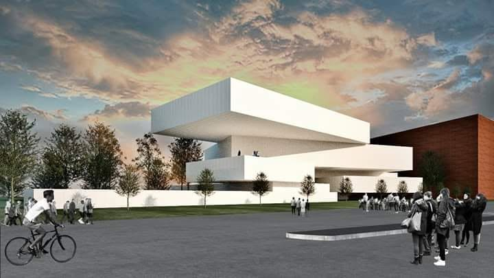
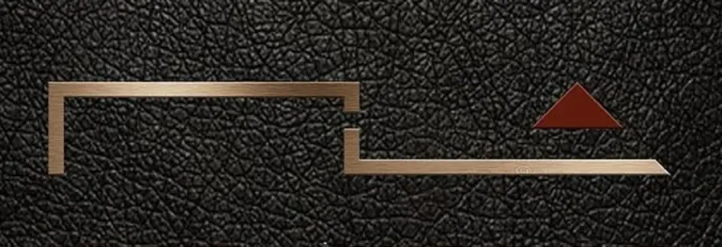
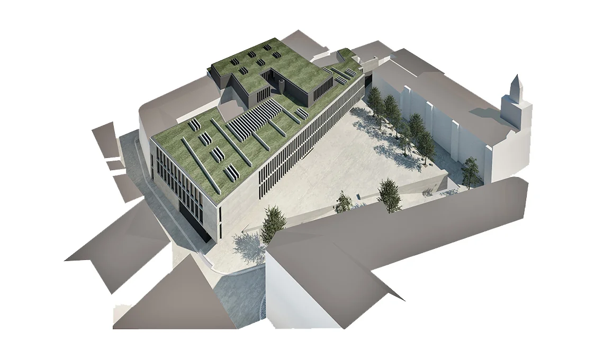

01
ML / PORTO

PROJETO EM DESTAQUE
Explorar portefólio ↗
MÁRIO LIMAARQUITECTO Iniciar projeto↗Entre matéria e imaginação,
cada lugar pode tornar-se extraordinário.

Projetos que investigam a relação entre pessoas, edifícios e cidade.
VER PROJETOS ↓Explorar as relações entre espaço, matéria e pessoas. Questionar o existente e desenhar novas possibilidades — da escala de um objeto à transformação da cidade.
Conheça o atelier ↗Uma seleção de propostas.
Diferentes escalas, a mesma curiosidade.
Os trabalhos apresentados incluem propostas de concurso e estudos. As imagens de projeto são representações arquitetónicas, não fotografias de obras concluídas.
Mário Lima.
Arquitetura como ponto de encontro entre arte, investigação e vida.
Natural da Maia e formado em Arquitetura pela Universidade Lusíada do Porto, em 2006. A formação artística na Escola Soares dos Reis e a experimentação musical fazem parte de um percurso que atravessa disciplinas.
Depois de colaborar com arquitetos, empresas e instituições públicas, criou o seu atelier na Maia. Uma prática aberta à criação artística e científica, que explora diferentes escalas e tipologias.

INVESTIGAR.Universidade Lusíada
do Porto, 2006
Maia, Porto
Portugal
Arquitetura, design
e investigação
Projetos que partem das particularidades de cada lugar e de cada programa.
Habitação · Urbanismo · Reabilitação · Património · PaisagemUma abordagem que atravessa escalas, do espaço interior aos objetos que o habitam.
Interiores · Mobiliário · Design gráficoLeitura crítica de ideias e possibilidades nos domínios da arquitetura, do design e da construção.
Arquitetura · Design · ConstruçãoO desenho e a representação como ferramentas para pensar, experimentar e comunicar.
Ilustração · Modelação 3D · Renderização · InvestigaçãoMaia, Porto · Portugal